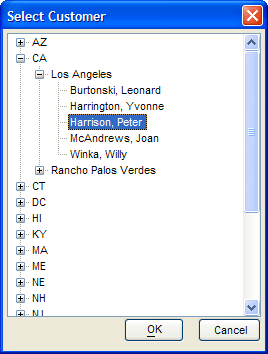

Populate Dynamically from a Table
This example of a tree control shows how to use the X directive to dynamically populate the branches of a tree control from a table. It shows the use of the {DATA} command to return values different than displayed and the {EXPAND} command to display a message when populating a branch takes longer than 2 seconds.

The contentExpn, filterExpn, and orderExpn expressions specify that the list will contain unique values from the bill_state_region field ordered by bill_state_region. After calling the expandState()and expandCity()functions to generate values for lower branches of the tree, the TABLE.EXTERNAL_RECORD_CONTENT_GET()method returns the CR-LF delimited list.
contentExpn = "alltrim(bill_state_region) + '|{EXPAND=Expanding tree...}!expandState(' + quote(alltrim(bill_state_region) ) + ')'" filterExpn = "bill_state_region <> '' .and. unique_key_value()" orderExpn = "bill_state_region" treeList = table.external_record_content_get(tablename,contentExpn,orderExpn,filterExpn) |
The X directive in the tree control syntax says that functions will be providing the contents of the branches of the tree. The D directive says that the "|" character separates the parent node from the function that defines its branches.
[%X;S=BLR;D="|"%.50,20selected^ |
The expandState()function dynamically generates the expanded list of cities for a selected state.
function expandState as C (state as C) ui_yield() dim filterExpn as C dim orderExpn as C dim contentExpn as C dim tablename as C tablename = "customer" contentExpn = "alltrim(bill_city) + '|{EXPAND=Expanding tree...}!expandCity(' + quote(alltrim(bill_city) ) + ')'" filterExpn = "unique_key_value().and. bill_state_region=" + quote(state) orderExpn = "bill_city" expandState = table.external_record_content_get(tablename, contentExpn, orderExpn, filterExpn) if expandState = "" then expandState = " end if end function |
The expandCity()function dynamically generates the expanded list of customer names for a selected city.
function expandCity as c (city as c ) ui_yield() dim filterExpn as C dim orderExpn as C dim contentExpn as C dim tablename as C tablename = "customer" contentExpn = "'{DATA=ID:' + customer_id + '}' + alltrim(lastname) + ', ' + alltrim(firstname)" filterExpn = "unique_key_value().and. bill_city=" + quote(city) orderExpn = "lastname" expandCity = table.external_record_content_get(tablename, contentExpn, orderExpn, filterExpn) if expandCity = "" then expandCity = " end if end function |
Supported By
Alpha Five Version 8 and Above
Limitations
Desktop applications only.
See Also
Tree Control X Directive, Tree Control D Directive, {EXPAND}, {DATA}, TABLE.EXTERNAL_RECORD_CONTENT_GET()
Next